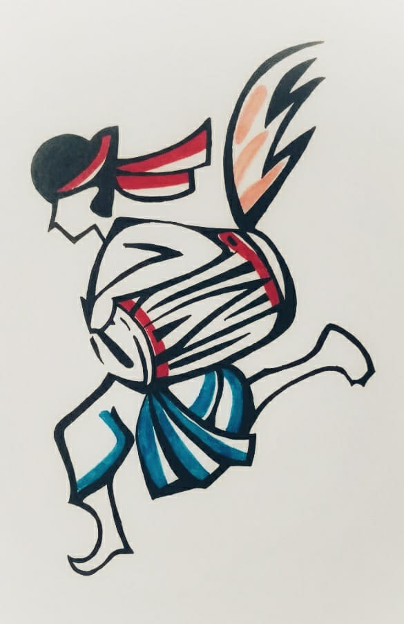

I'm Rachana from India and I have an energetic personality. I thoroughly enjoy interacting with people, which is what led me to pursue a career in project management. My journey began at Wipro, where I started as an Associate. During my time there, I gained valuable experience in handling international clients and providing successful support to the team during the COVID-19 crisis. Thanks to my management skills, I received an offer to join Iglulabs as a Project Coordinator. My journey hasn't been a cakewalk; I've faced a lot of hurdles, which helped me build a strong knowledge and understanding of how to overcome challenges and set things right.
Email
rachana9696@gmail.com
Phone
+91 9640120438
Address
Hyderabad, T.S